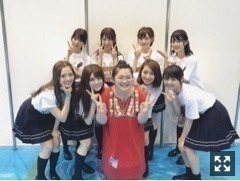

| 2017/07 03 Mon | 愛情。775回目 |
真夏の全国ツアー2017
神宮球場2日間ありがとうございました。
個人的に、良いスタートが切れたというか
スイッチが入りました。

1期生
期別ごとにはじまった今回のライブ。
如何だったでしょうか。
それぞれ強い絆を感じましたが、
私自身も1期生への
愛が止まらない2日間でした。
1期2期3期全員揃って
初めて歌った設定温度は、
喉の奥がギュってなりました。
これが今の乃木坂なんだなあ〜〜
家でリハ動画を見て泣きました。
前日涙が止まらなかったです。
神宮球場でのライブはもう4度目？
になるけど、あの景色はずっと慣れません。
みなさんの声援に支えられて
ここに立てていることを
改めて痛感致しました。
そして、ライブが心の底から
大好きだなと思いました。
無心でただただ楽しんでる時が
いちばん輝いてると思いました。
より一層ツアーを盛り上げたいです。
地方公演もよろしくお願いします！
ツアーファイナルの舞台は東京ドームです。
しかも2日間！
6年目と考えると
長かったと感じるのか
短かった感じるのか、、
でも小学校でいったら1〜6年生だから、、
小学生の時と体感とはまた違うので、
そう考えると不思議な気持ちです。
今年のツアー良かったなあ
今年がいちばんだったな
ってなりますように！
セーラー服、ヒィ！
アンダーアルバム発売決定されましたね！
すごいな、すごいわー
本当に素敵な曲たくさんあるから
ぜひたくさんの方に聴いていただきたい！！
楽しみ〜

文乃役の富田望生ちゃんが来てくれました。
映画あさひなぐチーム！
まりか
コメント(919)
2017/07/03 20:48